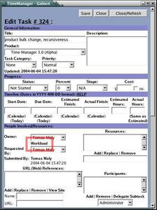
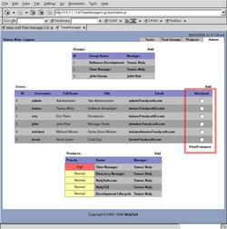
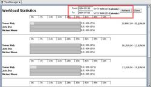
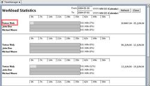

The Workload module provides a way to compare the workload a person has over several weeks (one week at a time), as well as compare several people during the same week. This makes redistribution of tasks simple.

- Workload from task assignment:
- Workload from Administration Console:
- Dates:
- Task list / Reassignment:
By clicking on 'Workload' next to the task owner list in a task, one can then look at the workload over several weeks (confined to the start/due dates of the task, if given), and then click on 'Select' next to the person's name to assign the task to them.
By selecting the checkboxes next to each relevent user and clicking on 'View/Compare' in the Workload column, one can get to a generalized comparison.
By selecting dates and clicking on 'Refresh', one gets a different weekly list of the users' workload. This helps refine or broaden the analysis.
By clicking on a user for a particular week, you can then get a browse list for the tasks that person is handling that week. You can see which tasks take how many hours, and potentially reassign to even out the workload.
